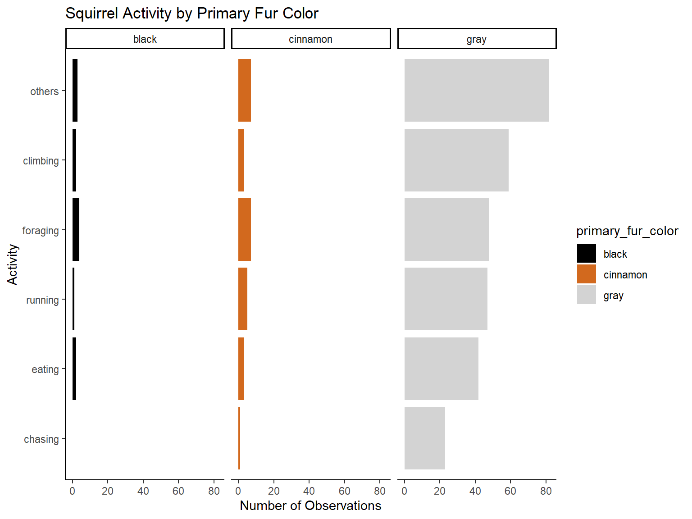
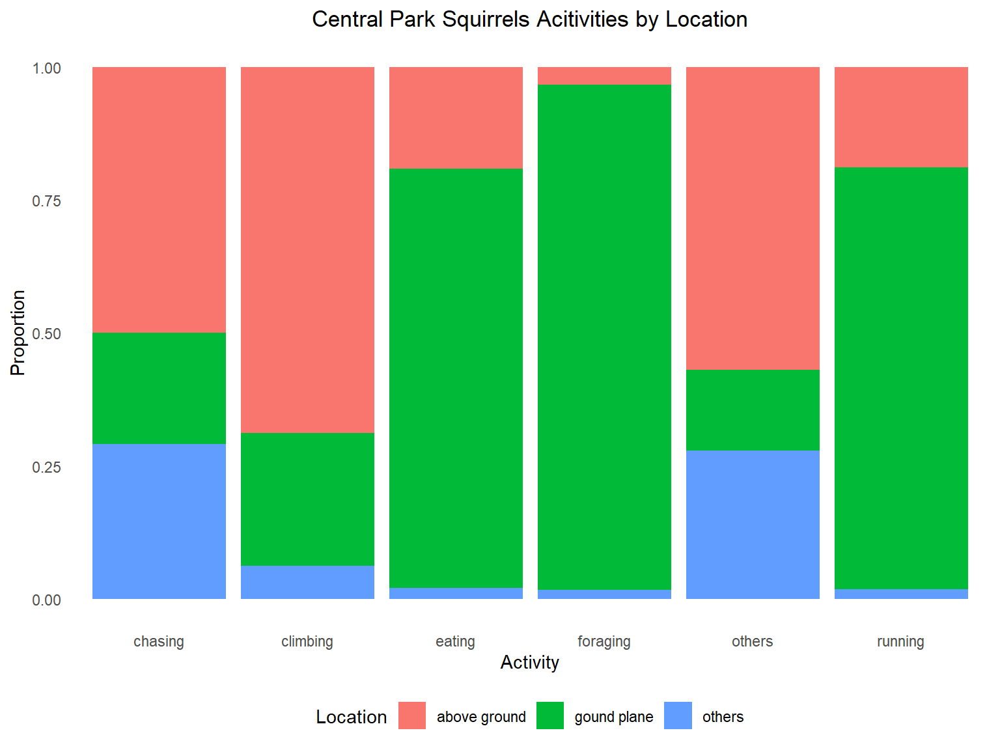

sqr_nyc <-
read_csv('./squirrel_data_in_nyc/squirrel-data.csv') %>%
janitor::clean_names() %>%
mutate(
lat = squirrel_latitude_dd_dddddd,
long = squirrel_longitude_dd_dddddd,
lat_long = str_c('POINT (', long, ' ',lat,')'),
activity = tolower(activities),
unique_squirrel_id = squirrel_id
) %>%
mutate(
primary_fur_color = case_when(
primary_fur_color == "Gray" ~ "gray",
primary_fur_color == "Cinnamon" ~ "cinnamon",
primary_fur_color == "Black" ~ "black"
)
)%>%
mutate(
activity = map(str_split(activity, ','), 1) %>% unlist(),
activity = map(str_split(activity, ' '), 1) %>% unlist()
)%>%
mutate(
activity = case_when(
activity == "running" ~ "running",
activity == "eating" ~ "eating",
activity == "foraging" ~ "foraging",
activity == "climbing" ~ "climbing",
activity == "chasing" ~ "chasing",
TRUE ~ 'others'
)
)%>%
mutate(
location = map(str_split(location, ','), 1) %>% unlist()
) %>%
mutate(
location = case_when(
location == "Ground Plane"~ "gound plane",
location =="Above Ground" ~ "above ground",
TRUE ~ 'others'
)
) %>%
dplyr::select(
-c("squirrel_id" ,"color_notes", "activities",
"other_notes_or_observations", "squirrel_longitude_dd_dddddd",
"squirrel_latitude_dd_dddddd")
) %>%
dplyr::select(unique_squirrel_id,everything()) %>%
filter(long < -70 )
sqr_nyc %>% skimr::skim_without_charts()
Data summary
| Name |
Piped data |
| Number of rows |
340 |
| Number of columns |
15 |
| _______________________ |
|
| Column type frequency: |
|
| character |
13 |
| numeric |
2 |
| ________________________ |
|
| Group variables |
None |
Variable type: character
| unique_squirrel_id |
0 |
1.00 |
7 |
7 |
0 |
340 |
0 |
| area_name |
0 |
1.00 |
8 |
17 |
0 |
4 |
0 |
| area_id |
0 |
1.00 |
1 |
1 |
0 |
4 |
0 |
| park_name |
0 |
1.00 |
11 |
31 |
0 |
18 |
0 |
| park_id |
0 |
1.00 |
2 |
2 |
0 |
18 |
0 |
| primary_fur_color |
1 |
1.00 |
4 |
8 |
0 |
3 |
0 |
| highlights_in_fur_color |
92 |
0.73 |
4 |
15 |
0 |
7 |
0 |
| location |
0 |
1.00 |
6 |
12 |
0 |
3 |
0 |
| above_ground_height_in_feet |
236 |
0.31 |
1 |
13 |
0 |
26 |
0 |
| specific_location |
271 |
0.20 |
4 |
48 |
0 |
28 |
0 |
| interactions_with_humans |
78 |
0.77 |
7 |
45 |
0 |
20 |
0 |
| lat_long |
0 |
1.00 |
26 |
28 |
0 |
324 |
0 |
| activity |
0 |
1.00 |
6 |
8 |
0 |
6 |
0 |
Variable type: numeric
| lat |
0 |
1 |
40.75 |
0.05 |
40.70 |
40.72 |
40.73 |
40.80 |
40.86 |
| long |
0 |
1 |
-73.97 |
0.03 |
-74.02 |
-74.00 |
-73.98 |
-73.94 |
-73.93 |
Squirrel Activity by Primary Fur Color
In our dataset, there are 5 main different kinds of activities
reported which are foraging, running, eating, climbing and chasing. The
first graph we drew about NYC data was to show the activities in
squirrels by their different primary fur colors.
(plot_1 =
sqr_nyc %>%
filter(!is.na(activity)) %>%
filter(!is.na(primary_fur_color)) %>%
group_by(primary_fur_color) %>%
count(activity, sort = TRUE)%>%
ggplot(aes(x = reorder(activity, n), y = n)) +
geom_bar(aes(fill = primary_fur_color), stat = "identity") +
scale_fill_manual(values = c("#000000", "#D2691E", "#D3D3D3", "indianred4")) +
theme_classic() +
facet_wrap(~primary_fur_color, nrow = 1) +
labs(title = "Squirrel Activity by Primary Fur Color", y = 'Number of Observations', x = 'Activity') +
coord_flip())

Constrained on the activities indicated in the central park dataset,
gray squirrels like to climb the most frequently and chase the least
frequently. Black and gray squirrels like to forage the most and chase
the least.
Squirrel Activity by Location of Squirrel
We make this plot to analyze central park squirrel activity by their
location (above ground, ground plane). It was to show how distributions
of different activities differ by the locations in the NYC.
sqr_nyc %>%
filter(!is.na(activity)) %>%
filter(!is.na(location)) %>%
group_by(activity) %>%
mutate(n=1) %>%
ggplot() +
geom_col(aes(y=n,x = activity, fill = location), position="fill") +
ggtitle('Central Park Squirrels Acitivities by Location') +
theme(plot.title = element_text(hjust = 0.5)) +
theme(plot.title = element_text(hjust = 0.5), panel.grid.minor = element_blank(),panel.grid.major = element_blank())+ labs( x = 'Activity', y= 'Proportion')+
labs(fill = 'Location')

Activities like eating, foraging and running most happened on the
ground plane, but other activities like chasing and climbing happened
above ground for the most of time.
Primary Fur Color Map
We build this map to visualize the distribution of each squirrel by
different primary fur color clearly.
pal_coats <- colorFactor(c("#000000", "#D2691E", "#D3D3D3", "white"), domain = c("black", "cinnamon", "grey"))
#Locations based on fur color
sqr_nyc %>%
filter(!is.na(primary_fur_color)) %>%
leaflet() %>%
addTiles() %>%
addCircleMarkers(lng = ~long,
lat = ~lat, radius = 3, color = ~pal_coats(primary_fur_color), stroke = FALSE, fillOpacity = 0.5) %>%
addLegend(position = "topright",pal = pal_coats, values = ~primary_fur_color)